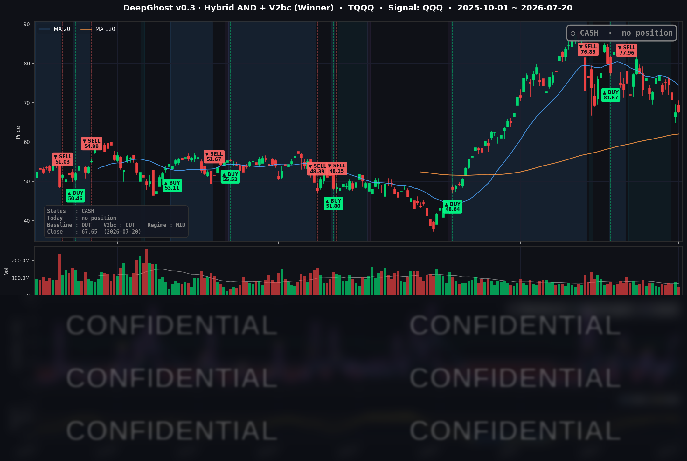

👻 매일 시그널과 히스토리를 홈페이지에서 한눈에 → www.ghostai.co.kr
금리가 다시 4.6%로 오르고 유가·지정학·FOMC 불확실성이 겹쳐서 높은 변동성이 계속 유지되고 있습니다. 투자 심리가 바닥입니다. 주가는 수급이 최우선이란는 말이 있습니다. 국장이던 미장이던 지금 수급 상황은 최악입니다. 즉, 신규 자금이 안들어오고 있다는 말이지요. 투자 심리가 개선이 되어야 매수 신호가 나올 것입니다. 그때까지 옆에서 지켜보시면 됩니다.
📊 오늘의 매매 신호
| 항목 | 내용 |
|---|---|
| 오늘 할 일 | ✅ 아무것도 안 해도 됩니다 |
| 포지션 상태 | 💵 현금 보유 중 (OUT OF POSITION) |
| 현금 보유 기간 | 2026-06-25 ~ 2026-07-20 (25일) |
| TQQQ 종가 | $67.65 (+0.18%) |
신규 매수·매도 신호 없이 현금 대기가 이어졌습니다.
TQQQ 시그널 — OUT OF POSITION
현재 상태: 현금 보유 중 | 6/25 매도 이후 관망 지속

나스닥은 이날 강보합(QQQ +0.10%)으로 지수 가운데 유일하게 방어했지만, 공식 전략의 레버리지 트레이드(QQQ 시그널 → TQQQ)는 여전히 현금 대기 상태입니다. 매수 신호는 가격을 보고 나오는 것이 아니라, 모델이 정한 진입 조건 즉, 가격/시황/센티멘탈 등이 만족할때만 발생합니다.
오히려 최근 며칠 시장 과열도를 재던 주세 지표가 한 단계 후퇴하면서, 청산 압력이 있던 자리에서는 빠져나왔지만 신규 진입 쪽으로도 다가서지 못한 전형적인 "중립 대기" 국면입니다. 10년물 금리가 4.6%로 다시 오르고, 유가·지정학 리스크와 다음 주 FOMC가 겹친 상황에서 현금을 유지한채로 이벤트를 맞는 절제된 포지셔닝이라고 볼 수 있습니다.
오늘 미국 시장 — 시황 요약
지수 마감
| 지수 | 종가 | 등락률 |
|---|---|---|
| S&P 500 | 7,443.28 | -0.19% |
| 나스닥 종합 | 25,508.07 | -0.05% |
| 다우 존스 | 51,839.26 | -0.59% |
| 러셀 2000 | 2,942.43 | -0.67% |
얕은 혼조 마감이었습니다. 대형 기술주(QQQ +0.10%)는 강보합으로 버텼지만, 대형주 평균(S&P)·다우·소형주(러셀)는 소폭 밀렸습니다. "빅테크가 방어하고 소형·경기민감주가 눌린" 전형적인 위험 회피 하루였습니다.
국채 금리 동향
| 만기 | 수익률 | 전일 대비 |
|---|---|---|
| 3개월 | 3.705% | -0.2bp |
| 5년 | 4.328% | +5.5bp |
| 10년 | 4.598% | +5.7bp |
| 30년 | 5.118% | +5.4bp |
단기물(3개월)은 사실상 제자리인데 5년·10년·30년물이 일제히 5-6bp 올랐습니다. 정책금리 기대(앞단)는 그대로인데 장기물만 밀린 이른바 '커브 스티프닝'입니다. 10년물이 다시 4.6% 벽에 근접하며 성장주와 소형주 밸류에이션에 부담을 줬고, 금리에 민감한 러셀 2000이 가장 약했던 흐름과 맞아떨어집니다. 장단기 스프레드(10년-3개월 +89bp)는 정상적인 우상향을 유지해 커브 역전은 없습니다.
연준 발언 & 금리 패스
케빈 워시 연준 의장은 최근 "물가가 여전히 너무 높다"며 인플레이션 기대가 완화된 점은 긍정적이지만 아직 충분치 않다고 언급했습니다. 시장은 이를 매파적으로 해석했습니다. 6월 FOMC 의사록에서도 위원 절반은 동결·인하, 나머지 절반은 연내 인상을 지지할 만큼 견해가 갈렸습니다. 조기 인하 기대는 상당 부분 후퇴했고, 7/28-29 FOMC는 점도표(SEP)가 발표되지 않아 성명과 기자회견 톤에 시장 민감도가 집중될 전망입니다.
오늘의 핵심 이슈
- 지정학·유가: 미-이란 긴장이 9일 연속 이어지고 홍해 원유 수송로 봉쇄 위협까지 겹치며 유가가 견조했습니다. 위험 회피 심리가 대형주 평균과 다우를 눌렀으나, 외교적 해결 여지 발언으로 장중 낙폭은 축소됐습니다.
- 빅테크 실적 대기: 이번 주 구글·테슬라(7/22 장 마감 후), 인텔(7/24) 실적이 몰려 있어 관망세가 짙었습니다. 나스닥의 강보합은 "실적 확인 전 포지션 유지" 성격입니다.
- 금리 재상승: 10년물 4.60% 재접근과 장기물 동반 상승이 성장주·소형주에 밸류에이션 압박으로 작용했습니다.
변동성 & 투자심리
VIX는 18.65로 전일(18.77) 대비 소폭 내렸습니다. 경계감은 있으나 패닉과는 거리가 먼 '관망 속 완만한 안정' 수준입니다. 공포탐욕 지수는 당일 확정치가 확인되지 않았으나, VIX 18대와 얕은 조정을 종합하면 중립 근방으로 판단됩니다. 하방 요인(유가·지정학·금리)과 상방 요인(빅테크·반도체 방어)이 상쇄되며 시장은 실적 주간과 FOMC를 앞두고 방향을 유보한 국면입니다.
매크로 & 원자재
WTI는 배럴당 $82.49, 브렌트는 $88.10, 금은 온스당 $4,012.70 수준입니다. 유가는 지정학 프리미엄으로 $82대에서 견조한 흐름을 이어갔습니다. (원자재는 7/20 세션 데이터 공백으로 직전 확정치인 7/17 종가 기준이며, 7/21 오버나이트에서도 큰 변화는 없었습니다.)
주요 종목 동향
| 종목 | 전일 종가 | 당일 종가 | 등락률 | 비고 |
|---|---|---|---|---|
| AAPL | 333.74 | 326.59 | -2.14% | 대형주 중 최대 약세권. 지수 방어에 부담 |
| NVDA | 202.81 | 203.28 | +0.23% | 강보합, AI 반도체 트레이드 유지 |
| MSFT | 393.82 | 402.29 | +2.15% | 이날 커버리지 최강. 400선 회복 |
| GOOGL | 346.77 | 351.99 | +1.51% | 7/22 실적 대기, 선반영 강세 |
| META | 646.01 | 645.85 | -0.02% | 사실상 보합 |
| AMZN | 247.23 | 249.99 | +1.12% | 대형 플랫폼 강세 동참 |
| TSLA | 380.84 | 369.57 | -2.96% | 커버리지 최대 낙폭. 7/22 실적 앞두고 경계 |
| NFLX | 68.95 | 67.60 | -1.96% | 약세 |
| AVGO | 370.83 | 378.16 | +1.98% | 반도체 강세 주도 |
| QCOM | 171.78 | 170.32 | -0.85% | 반도체 내 소폭 약세 |
| INTC | 95.04 | 97.06 | +2.13% | 7/24 실적 대기, 강세 |
| MU | 848.95 | 865.46 | +1.94% | 메모리 강세, 반도체 상방 견인 |
이번 주는 구글·테슬라(7/22)와 인텔(7/24) 실적, 그리고 다음 주 7/29 FOMC까지 굵직한 이벤트가 이어집니다. "다음 방아쇠는 실적과 연준"인 셈입니다.
Ghost.AI — Quantitative AI Investment
Model: DeepGhost v0.3 | Transformer-Based Deep Learning
Coverage: 13 tickers | Updated every trading day after US market close
⚠️ 본 자료는 정보 제공 목적으로만 작성되었으며 투자 권유가 아닙니다. 모든 투자의 책임은 투자자 본인에게 있습니다. 과거 성과가 미래 수익을 보장하지 않습니다.
[유의사항]
- 본 서비스는 불특정 다수를 대상으로 발행되는 단방향 정보 제공 서비스이며, 투자자 개인의 재산 상황·투자 목적·위험 선호도를 반영한 개별 투자 조언이 아닙니다.
- 고스트에이아이 주식회사는 고객과 쌍방향 의사소통(개별 상담, 맞춤형 자문 등)을 제공하지 않습니다.
- 본 콘텐츠는 투자 권유 또는 매매 주문의 청약·청약의 권유에 해당하지 않으며, 최종 투자 판단 및 그에 따른 손익의 책임은 전적으로 투자자 본인에게 있습니다.
고스트에이아이 주식회사